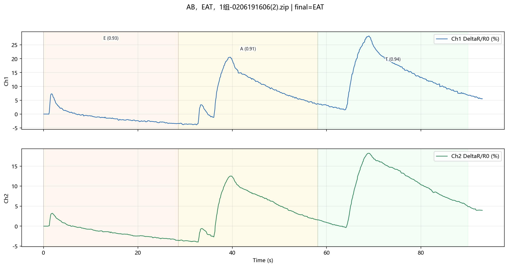
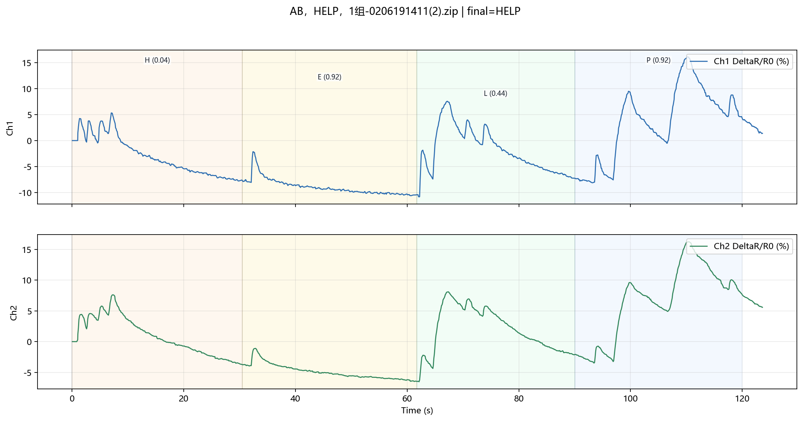
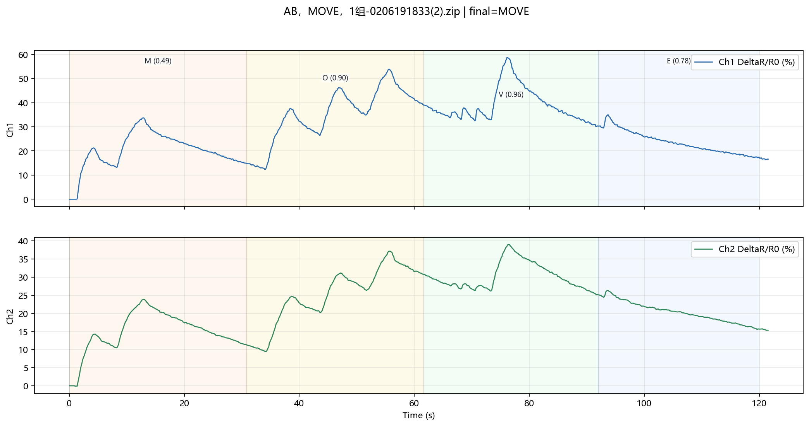

Prediction Visualization
AB，EAT，1组-0206191606(2).zip
GT: EAT | Pred: EAT
Seq: EAT | mean_conf=0.927

AB，help me，1组-0205183330(2).zip
GT: HELP ME | Pred: HELP ME
Seq: HELPME | mean_conf=0.335
_prediction.png)
AB，Help me，1组-0206134245(2).zip
GT: HELP ME | Pred: HELP ME
Seq: HELPME | mean_conf=0.602
_prediction.png)
AB，help me，每个字母隔5s，1组-0206134739(2).zip
GT: HELP ME | Pred: HELP ME
Seq: HELPME | mean_conf=0.662
_prediction.png)
AB，help me，连续一组-0205183000(2).zip
GT: HELP ME | Pred: HELP ME
Seq: HELPME | mean_conf=0.376
_prediction.png)
AB，HELP，1组-0206191411(2).zip
GT: HELP | Pred: HELP
Seq: HELP | mean_conf=0.579

AB，MOVE，1组-0206191833(2).zip
GT: MOVE | Pred: MOVE
Seq: MOVE | mean_conf=0.779
